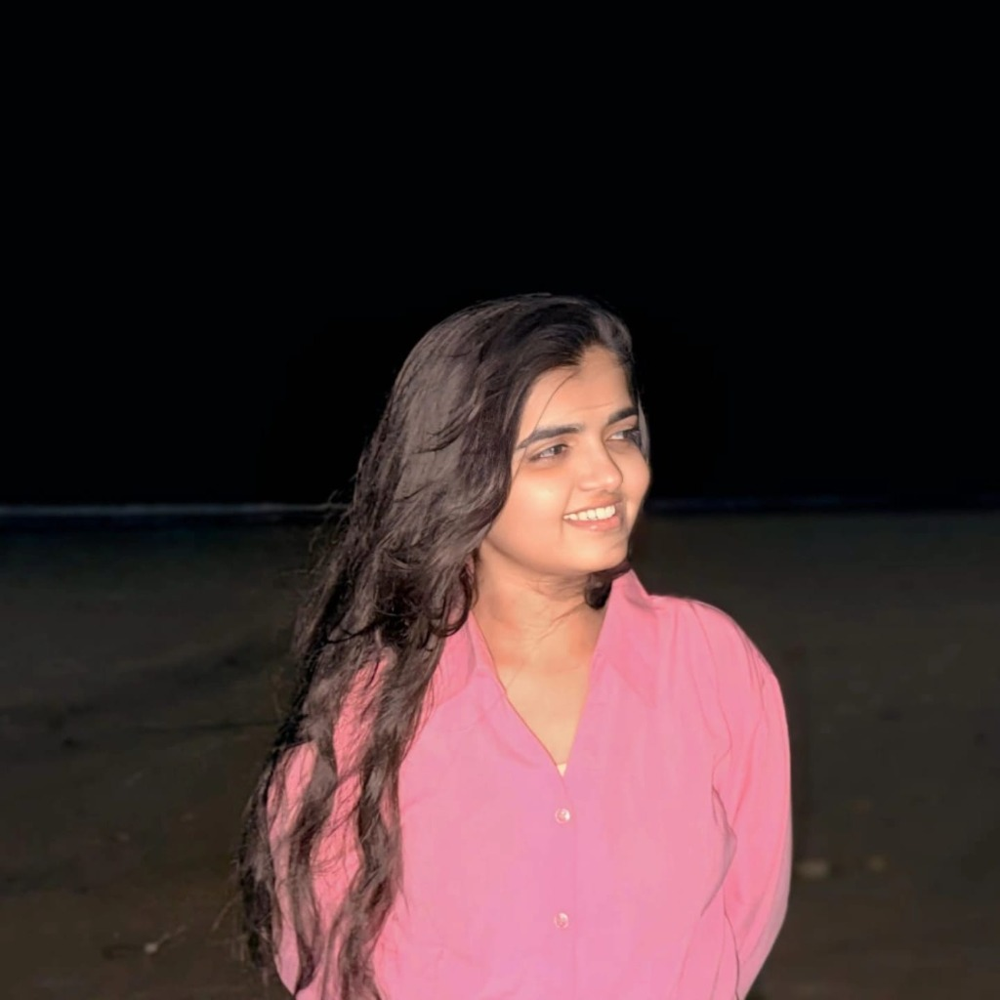
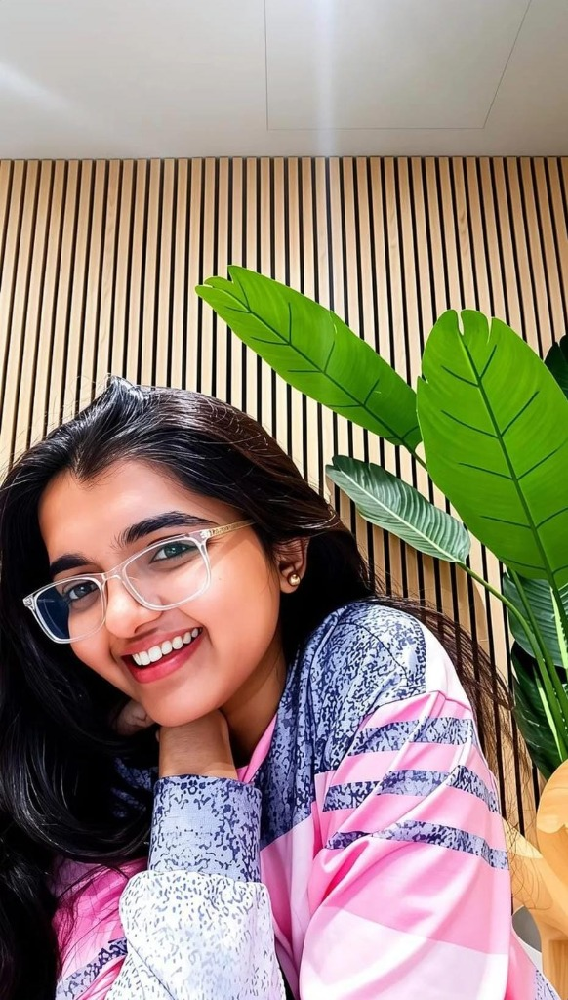
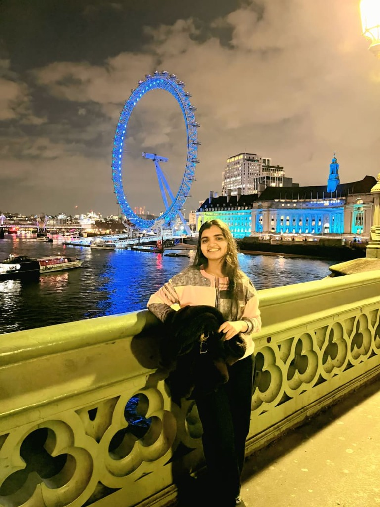

"Moving across the world to the UK taught me that no situation is too overwhelming and no challenge is too big. Whether in life or in complex problems, if I stay calm and keep working hard, I will figure it out and thrive."
Whether you want to collaborate, discuss ideas, or connect about life: I am always open to meaningful conversations.